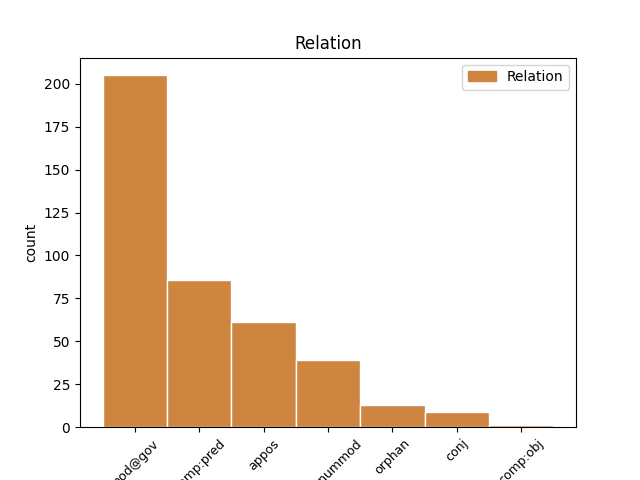
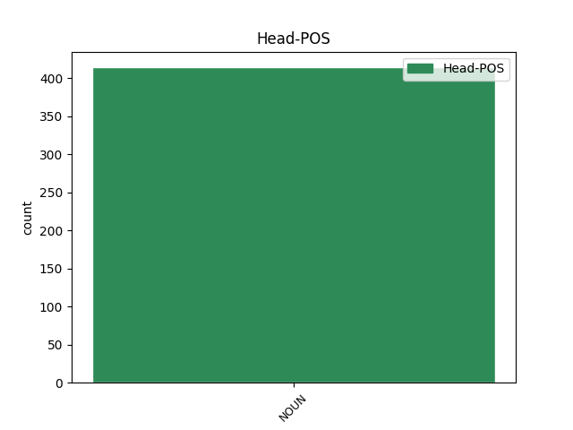
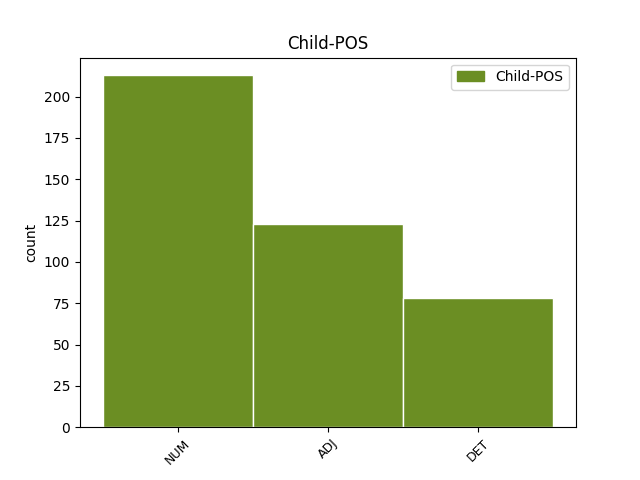

Distribution of features within this leaf



Agreement Rules sorted by frequency.
- When the dependent token is the predicative complements(comp:pred) of the head token, and the head token is NOUN and the dependent token is ADJ.
1 Jeho _ _ _ _ 0 _ _ _
2 matka matka NOUN NNFS1-----A---- Case=Nom|Gender=Fem|Number=Sing|Polarity=Pos 0 _ _ _
3 křičela _ _ _ _ 0 _ _ _
4 zkamenělá zkamenělý ADJ AAFS1----1A---- Case=Nom|Degree=Pos|Gender=Fem|Number=Sing|Polarity=Pos 2 comp:pred _ _
5 hrůzou _ _ _ _ 0 _ _ _
6 : _ _ _ _ 0 _ _ _
1 Kůra kůra NOUN NNFS1-----A---- Case=Nom|Gender=Fem|Number=Sing|Polarity=Pos 0 _ _ _
2 : _ _ _ _ 0 _ _ _
3 světle _ _ _ _ 0 _ _ _
4 šedá šedý ADJ AAFS1----1A---- Case=Nom|Degree=Pos|Gender=Fem|Number=Sing|Polarity=Pos 1 appos _ _
1 Tajemník _ _ _ _ 0 _ _ _
2 to _ _ _ _ 0 _ _ _
3 ale _ _ _ _ 0 _ _ _
4 po _ _ _ _ 0 _ _ _
5 několika několik DET Ca--6---------- Case=Loc|NumType=Card|PronType=Ind 7 det@nummod _ _
6 chvatných _ _ _ _ 0 _ _ _
7 krocích krok NOUN NNIP6-----A---- Animacy=Inan|Case=Loc|Gender=Masc|Number=Plur|Polarity=Pos 0 _ _ _
8 vzdal _ _ _ _ 0 _ _ _
9 , _ _ _ _ 0 _ _ _
10 s _ _ _ _ 0 _ _ _
11 pokrčenými _ _ _ _ 0 _ _ _
12 rameny _ _ _ _ 0 _ _ _
13 a _ _ _ _ 0 _ _ _
14 s _ _ _ _ 0 _ _ _
15 nechápavým _ _ _ _ 0 _ _ _
16 výrazem _ _ _ _ 0 _ _ _
17 v _ _ _ _ 0 _ _ _
18 obličeji _ _ _ _ 0 _ _ _
19 se _ _ _ _ 0 _ _ _
20 vrátil _ _ _ _ 0 _ _ _
21 zpátky _ _ _ _ 0 _ _ _
22 . _ _ _ _ 0 _ _ _
1 " _ _ _ _ 0 _ _ _
2 Mnozí _ _ _ _ 0 _ _ _
3 jsou _ _ _ _ 0 _ _ _
4 tak _ _ _ _ 0 _ _ _
5 zaslepení _ _ _ _ 0 _ _ _
6 a _ _ _ _ 0 _ _ _
7 plni _ _ _ _ 0 _ _ _
8 předsudků _ _ _ _ 0 _ _ _
9 , _ _ _ _ 0 _ _ _
10 že _ _ _ _ 0 _ _ _
11 by _ _ _ _ 0 _ _ _
12 neotevřeli _ _ _ _ 0 _ _ _
13 dveře _ _ _ _ 0 _ _ _
14 , _ _ _ _ 0 _ _ _
15 ani _ _ _ _ 0 _ _ _
16 když _ _ _ _ 0 _ _ _
17 by _ _ _ _ 0 _ _ _
18 sama sám DET PLFS1---------- Case=Nom|Gender=Fem|Number=Sing|PronType=Emp 19 comp:pred _ _
19 pravda pravda NOUN NNFS1-----A---- Case=Nom|Gender=Fem|Number=Sing|Polarity=Pos 0 _ _ _
20 prosila _ _ _ _ 0 _ _ _
21 o _ _ _ _ 0 _ _ _
22 přijetí _ _ _ _ 0 _ _ _
23 . _ _ _ _ 0 _ _ _
1 Uběhly _ _ _ _ 0 _ _ _
2 dvě _ _ _ _ 0 _ _ _
3 pokojné _ _ _ _ 0 _ _ _
4 hodiny _ _ _ _ 0 _ _ _
5 na _ _ _ _ 0 _ _ _
6 pláži _ _ _ _ 0 _ _ _
7 , _ _ _ _ 0 _ _ _
8 moře _ _ _ _ 0 _ _ _
9 bylo _ _ _ _ 0 _ _ _
10 klidné _ _ _ _ 0 _ _ _
11 , _ _ _ _ 0 _ _ _
12 obloha obloha NOUN NNFS1-----A---- Case=Nom|Gender=Fem|Number=Sing|Polarity=Pos 0 _ _ _
13 modrá _ _ _ _ 0 _ _ _
14 , _ _ _ _ 0 _ _ _
15 všechno _ _ _ _ 0 _ _ _
16 nádherné nádherný ADJ AANS1----1A---- Case=Nom|Degree=Pos|Gender=Neut|Number=Sing|Polarity=Pos 12 orphan _ SpaceAfter=No
17 . _ _ _ _ 0 _ _ _
1 Kvůli _ _ _ _ 0 _ _ _
2 jeho _ _ _ _ 0 _ _ _
3 chování _ _ _ _ 0 _ _ _
4 náš _ _ _ _ 0 _ _ _
5 Pán _ _ _ _ 0 _ _ _
6 ale _ _ _ _ 0 _ _ _
7 rozhodl _ _ _ _ 0 _ _ _
8 snížit _ _ _ _ 0 _ _ _
9 nález _ _ _ _ 0 _ _ _
10 o _ _ _ _ 0 _ _ _
11 devět _ _ _ _ 0 _ _ _
12 set sto NUM ClIP2---------- Animacy=Inan|Case=Gen|Gender=Masc|Number=Plur|NumForm=Word|NumType=Card|NumValue=1,2,3 13 mod@gov _ _
13 dinárů dinár NOUN NNIP2-----A---- Animacy=Inan|Case=Gen|Gender=Masc|Number=Plur|Polarity=Pos 0 _ _ _
14 . _ _ _ _ 0 _ _ _
15 " _ _ _ _ 0 _ _ _
1 " _ _ _ _ 0 _ _ _
2 Moje _ _ _ _ 0 _ _ _
3 trápení trápení NOUN NNNS1-----A---- Case=Nom|Gender=Neut|Number=Sing|Polarity=Pos 0 _ _ _
4 , _ _ _ _ 0 _ _ _
5 moje _ _ _ _ 0 _ _ _
6 starosti _ _ _ _ 0 _ _ _
7 , _ _ _ _ 0 _ _ _
8 moje _ _ _ _ 0 _ _ _
9 strasti _ _ _ _ 0 _ _ _
10 , _ _ _ _ 0 _ _ _
11 moje _ _ _ _ 0 _ _ _
12 smutky _ _ _ _ 0 _ _ _
13 - _ _ _ _ 0 _ _ _
14 to ten DET PDNS1---------- Case=Nom|Gender=Neut|Number=Sing|PronType=Dem 3 appos _ _
15 všechno _ _ _ _ 0 _ _ _
16 mě _ _ _ _ 0 _ _ _
17 tak _ _ _ _ 0 _ _ _
18 tísní _ _ _ _ 0 _ _ _
19 a _ _ _ _ 0 _ _ _
20 tíží _ _ _ _ 0 _ _ _
21 , _ _ _ _ 0 _ _ _
22 že _ _ _ _ 0 _ _ _
23 už _ _ _ _ 0 _ _ _
24 to _ _ _ _ 0 _ _ _
25 nemůžu _ _ _ _ 0 _ _ _
26 dál _ _ _ _ 0 _ _ _
27 snášet _ _ _ _ 0 _ _ _
28 , _ _ _ _ 0 _ _ _
29 " _ _ _ _ 0 _ _ _
30 bědoval _ _ _ _ 0 _ _ _
31 bez _ _ _ _ 0 _ _ _
32 přestání _ _ _ _ 0 _ _ _
33 . _ _ _ _ 0 _ _ _
1 Plachost _ _ _ _ 0 _ _ _
2 , _ _ _ _ 0 _ _ _
3 pocit _ _ _ _ 0 _ _ _
4 vnitřní _ _ _ _ 0 _ _ _
5 paniky _ _ _ _ 0 _ _ _
6 , _ _ _ _ 0 _ _ _
7 ztřeštěnost ztřeštěnost NOUN NNFS1-----A---- Case=Nom|Gender=Fem|Number=Sing|Polarity=Pos 0 _ _ _
8 , _ _ _ _ 0 _ _ _
9 to ten DET PDNS1---------- Case=Nom|Gender=Neut|Number=Sing|PronType=Dem 7 conj _ _
10 všechno _ _ _ _ 0 _ _ _
11 , _ _ _ _ 0 _ _ _
12 co _ _ _ _ 0 _ _ _
13 vždycky _ _ _ _ 0 _ _ _
14 pociťovala _ _ _ _ 0 _ _ _
15 , _ _ _ _ 0 _ _ _
16 když _ _ _ _ 0 _ _ _
17 se _ _ _ _ 0 _ _ _
18 před _ _ _ _ 0 _ _ _
19 mladíkem _ _ _ _ 0 _ _ _
20 svlékala _ _ _ _ 0 _ _ _
21 ( _ _ _ _ 0 _ _ _
22 a _ _ _ _ 0 _ _ _
23 nemohla _ _ _ _ 0 _ _ _
24 se _ _ _ _ 0 _ _ _
25 krýt _ _ _ _ 0 _ _ _
26 tmou _ _ _ _ 0 _ _ _
27 ) _ _ _ _ 0 _ _ _
28 , _ _ _ _ 0 _ _ _
29 to _ _ _ _ 0 _ _ _
30 všechno _ _ _ _ 0 _ _ _
31 bylo _ _ _ _ 0 _ _ _
32 pryč _ _ _ _ 0 _ _ _
33 . _ _ _ _ 0 _ _ _
1 Veselé _ _ _ _ 0 _ _ _
2 slavnosti slavnost NOUN NNFP1-----A---- Case=Nom|Gender=Fem|Number=Plur|Polarity=Pos 0 _ _ _
3 , _ _ _ _ 0 _ _ _
4 nádherné _ _ _ _ 0 _ _ _
5 koncerty _ _ _ _ 0 _ _ _
6 , _ _ _ _ 0 _ _ _
7 hlučné _ _ _ _ 0 _ _ _
8 plesy _ _ _ _ 0 _ _ _
9 a _ _ _ _ 0 _ _ _
10 grandiózní _ _ _ _ 0 _ _ _
11 hostiny _ _ _ _ 0 _ _ _
12 střídaly _ _ _ _ 0 _ _ _
13 jedna jeden NUM ClFS1---------- Case=Nom|Gender=Fem|Number=Sing|NumForm=Word|NumType=Card|NumValue=1,2,3 2 comp:pred _ _
14 druhou _ _ _ _ 0 _ _ _
15 . _ _ _ _ 0 _ _ _
1 V _ _ _ _ 0 _ _ _
2 nich _ _ _ _ 0 _ _ _
3 stál _ _ _ _ 0 _ _ _
4 profesor profesor NOUN NNMS1-----A---- Animacy=Anim|Case=Nom|Gender=Masc|Number=Sing|Polarity=Pos 0 _ _ _
5 Masák _ _ _ _ 0 _ _ _
6 , _ _ _ _ 0 _ _ _
7 jeden jeden NUM ClMS1---------- Animacy=Anim|Case=Nom|Gender=Masc|Number=Sing|NumForm=Word|NumType=Card|NumValue=1,2,3 4 appos _ _
8 z _ _ _ _ 0 _ _ _
9 nových _ _ _ _ 0 _ _ _
10 kádrů _ _ _ _ 0 _ _ _
11 , _ _ _ _ 0 _ _ _
12 které _ _ _ _ 0 _ _ _
13 přišly _ _ _ _ 0 _ _ _
14 na _ _ _ _ 0 _ _ _
15 zámek _ _ _ _ 0 _ _ _
16 , _ _ _ _ 0 _ _ _
17 a _ _ _ _ 0 _ _ _
18 s _ _ _ _ 0 _ _ _
19 obvyklým _ _ _ _ 0 _ _ _
20 výrazem _ _ _ _ 0 _ _ _
21 plaza _ _ _ _ 0 _ _ _
22 na _ _ _ _ 0 _ _ _
23 mě _ _ _ _ 0 _ _ _
24 zíral _ _ _ _ 0 _ _ _
25 , _ _ _ _ 0 _ _ _
26 načež _ _ _ _ 0 _ _ _
27 se _ _ _ _ 0 _ _ _
28 otočil _ _ _ _ 0 _ _ _
29 , _ _ _ _ 0 _ _ _
30 práskl _ _ _ _ 0 _ _ _
31 za _ _ _ _ 0 _ _ _
32 sebou _ _ _ _ 0 _ _ _
33 dveřmi _ _ _ _ 0 _ _ _
34 a _ _ _ _ 0 _ _ _
35 zmizel _ _ _ _ 0 _ _ _
36 . _ _ _ _ 0 _ _ _
1 Strýc _ _ _ _ 0 _ _ _
2 , _ _ _ _ 0 _ _ _
3 korpulentní _ _ _ _ 0 _ _ _
4 a _ _ _ _ 0 _ _ _
5 dobrosrdečný _ _ _ _ 0 _ _ _
6 , _ _ _ _ 0 _ _ _
7 hned _ _ _ _ 0 _ _ _
8 uvítal _ _ _ _ 0 _ _ _
9 svého _ _ _ _ 0 _ _ _
10 asketického _ _ _ _ 0 _ _ _
11 synovce _ _ _ _ 0 _ _ _
12 bohatou _ _ _ _ 0 _ _ _
13 hostinou _ _ _ _ 0 _ _ _
14 , _ _ _ _ 0 _ _ _
15 ale _ _ _ _ 0 _ _ _
16 ten _ _ _ _ 0 _ _ _
17 se _ _ _ _ 0 _ _ _
18 nedotkl _ _ _ _ 0 _ _ _
19 ani _ _ _ _ 0 _ _ _
20 ryb _ _ _ _ 0 _ _ _
21 ani _ _ _ _ 0 _ _ _
22 husí _ _ _ _ 0 _ _ _
23 pečínky pečínka NOUN NNFS2-----A---- Case=Gen|Gender=Fem|Number=Sing|Polarity=Pos 0 _ _ _
24 , _ _ _ _ 0 _ _ _
25 ani _ _ _ _ 0 _ _ _
26 bílého bílý ADJ AANS2----1A---- Case=Gen|Degree=Pos|Gender=Neut|Number=Sing|Polarity=Pos 23 conj _ _
27 ani _ _ _ _ 0 _ _ _
28 červeného _ _ _ _ 0 _ _ _
29 vína _ _ _ _ 0 _ _ _
30 , _ _ _ _ 0 _ _ _
31 spokojil _ _ _ _ 0 _ _ _
32 se _ _ _ _ 0 _ _ _
33 jen _ _ _ _ 0 _ _ _
34 s _ _ _ _ 0 _ _ _
35 trochou _ _ _ _ 0 _ _ _
36 zeleniny _ _ _ _ 0 _ _ _
37 a _ _ _ _ 0 _ _ _
38 sklenicí _ _ _ _ 0 _ _ _
39 vody _ _ _ _ 0 _ _ _
40 . _ _ _ _ 0 _ _ _
1 Tlak tlak NOUN NNIS1-----A---- Animacy=Inan|Case=Nom|Gender=Masc|Number=Sing|Polarity=Pos 0 _ _ _
2 sedmdesát sedmdesát NUM Cn-S1---------- Case=Nom|Number=Sing|NumForm=Word|NumType=Card 1 conj _ _
3 na _ _ _ _ 0 _ _ _
4 čtyřicet _ _ _ _ 0 _ _ _
5 , _ _ _ _ 0 _ _ _
6 puls _ _ _ _ 0 _ _ _
7 nehmatný _ _ _ _ 0 _ _ _
8 , _ _ _ _ 0 _ _ _
9 akce _ _ _ _ 0 _ _ _
10 srdeční _ _ _ _ 0 _ _ _
11 nepravidelná _ _ _ _ 0 _ _ _
12 . _ _ _ _ 0 _ _ _
1 Uběhly _ _ _ _ 0 _ _ _
2 dvě _ _ _ _ 0 _ _ _
3 pokojné _ _ _ _ 0 _ _ _
4 hodiny _ _ _ _ 0 _ _ _
5 na _ _ _ _ 0 _ _ _
6 pláži _ _ _ _ 0 _ _ _
7 , _ _ _ _ 0 _ _ _
8 moře _ _ _ _ 0 _ _ _
9 bylo _ _ _ _ 0 _ _ _
10 klidné _ _ _ _ 0 _ _ _
11 , _ _ _ _ 0 _ _ _
12 obloha obloha NOUN NNFS1-----A---- Case=Nom|Gender=Fem|Number=Sing|Polarity=Pos 0 _ _ _
13 modrá _ _ _ _ 0 _ _ _
14 , _ _ _ _ 0 _ _ _
15 všechno všechen DET PLNS1---------- Case=Nom|Gender=Neut|Number=Sing|PronType=Tot 12 orphan _ _
16 nádherné _ _ _ _ 0 _ _ _
17 . _ _ _ _ 0 _ _ _
Disagree Examples:
1 Otec _ _ _ _ 0 _ _ _
2 rukoval _ _ _ _ 0 _ _ _
3 deset deset NUM Cn-S4---------- Case=Acc|Number=Sing|NumForm=Word|NumType=Card 4 mod@gov _ _
4 dní den NOUN NNIP2-----A---1 Animacy=Inan|Case=Gen|Gender=Masc|Number=Plur|Polarity=Pos 0 _ _ _
5 po _ _ _ _ 0 _ _ _
6 svatbě _ _ _ _ 0 _ _ _
7 , _ _ _ _ 0 _ _ _
8 a _ _ _ _ 0 _ _ _
9 tak _ _ _ _ 0 _ _ _
10 si _ _ _ _ 0 _ _ _
11 s _ _ _ _ 0 _ _ _
12 matkou _ _ _ _ 0 _ _ _
13 ještě _ _ _ _ 0 _ _ _
14 neměli _ _ _ _ 0 _ _ _
15 čas _ _ _ _ 0 _ _ _
16 zevšednět _ _ _ _ 0 _ _ _
17 . _ _ _ _ 0 _ _ _
1 Přeložte _ _ _ _ 0 _ _ _
2 list _ _ _ _ 0 _ _ _
3 papíru _ _ _ _ 0 _ _ _
4 , _ _ _ _ 0 _ _ _
5 přeložte _ _ _ _ 0 _ _ _
6 jej _ _ _ _ 0 _ _ _
7 znovu _ _ _ _ 0 _ _ _
8 a _ _ _ _ 0 _ _ _
9 znovu _ _ _ _ 0 _ _ _
10 , _ _ _ _ 0 _ _ _
11 pak _ _ _ _ 0 _ _ _
12 jej _ _ _ _ 0 _ _ _
13 roztrhejte _ _ _ _ 0 _ _ _
14 podle _ _ _ _ 0 _ _ _
15 ohybu _ _ _ _ 0 _ _ _
16 papíru _ _ _ _ 0 _ _ _
17 na _ _ _ _ 0 _ _ _
18 šestnáct šestnáct NUM Cn-S4---------- Case=Acc|Number=Sing|NumForm=Word|NumType=Card 19 mod@gov _ _
19 dílků dílek NOUN NNIP2-----A---- Animacy=Inan|Case=Gen|Gender=Masc|Number=Plur|Polarity=Pos 0 _ _ _
20 . _ _ _ _ 0 _ _ _
1 A _ _ _ _ 0 _ _ _
2 na _ _ _ _ 0 _ _ _
3 tyhle _ _ _ _ 0 _ _ _
4 útržky _ _ _ _ 0 _ _ _
5 napište _ _ _ _ 0 _ _ _
6 šestnáct šestnáct NUM Cn-S4---------- Case=Acc|Number=Sing|NumForm=Word|NumType=Card 8 mod@gov _ _
7 největších _ _ _ _ 0 _ _ _
8 hodnot hodnota NOUN NNFP2-----A---- Case=Gen|Gender=Fem|Number=Plur|Polarity=Pos 0 _ _ _
9 , _ _ _ _ 0 _ _ _
10 jaké _ _ _ _ 0 _ _ _
11 v _ _ _ _ 0 _ _ _
12 životě _ _ _ _ 0 _ _ _
13 máte _ _ _ _ 0 _ _ _
14 , _ _ _ _ 0 _ _ _
15 šestnáct _ _ _ _ 0 _ _ _
16 věcí _ _ _ _ 0 _ _ _
17 , _ _ _ _ 0 _ _ _
18 na _ _ _ _ 0 _ _ _
19 nichž _ _ _ _ 0 _ _ _
20 vám _ _ _ _ 0 _ _ _
21 v _ _ _ _ 0 _ _ _
22 životě _ _ _ _ 0 _ _ _
23 nejvíc _ _ _ _ 0 _ _ _
24 záleží _ _ _ _ 0 _ _ _
25 . _ _ _ _ 0 _ _ _
1 A _ _ _ _ 0 _ _ _
2 na _ _ _ _ 0 _ _ _
3 tyhle _ _ _ _ 0 _ _ _
4 útržky _ _ _ _ 0 _ _ _
5 napište _ _ _ _ 0 _ _ _
6 šestnáct _ _ _ _ 0 _ _ _
7 největších _ _ _ _ 0 _ _ _
8 hodnot _ _ _ _ 0 _ _ _
9 , _ _ _ _ 0 _ _ _
10 jaké _ _ _ _ 0 _ _ _
11 v _ _ _ _ 0 _ _ _
12 životě _ _ _ _ 0 _ _ _
13 máte _ _ _ _ 0 _ _ _
14 , _ _ _ _ 0 _ _ _
15 šestnáct šestnáct NUM Cn-S4---------- Case=Acc|Number=Sing|NumForm=Word|NumType=Card 16 mod@gov _ _
16 věcí věc NOUN NNFP2-----A---- Case=Gen|Gender=Fem|Number=Plur|Polarity=Pos 0 _ _ _
17 , _ _ _ _ 0 _ _ _
18 na _ _ _ _ 0 _ _ _
19 nichž _ _ _ _ 0 _ _ _
20 vám _ _ _ _ 0 _ _ _
21 v _ _ _ _ 0 _ _ _
22 životě _ _ _ _ 0 _ _ _
23 nejvíc _ _ _ _ 0 _ _ _
24 záleží _ _ _ _ 0 _ _ _
25 . _ _ _ _ 0 _ _ _
1 Mohou _ _ _ _ 0 _ _ _
2 to _ _ _ _ 0 _ _ _
3 být _ _ _ _ 0 _ _ _
4 jména _ _ _ _ 0 _ _ _
5 vašich _ _ _ _ 0 _ _ _
6 bližních _ _ _ _ 0 _ _ _
7 , _ _ _ _ 0 _ _ _
8 věci _ _ _ _ 0 _ _ _
9 , _ _ _ _ 0 _ _ _
10 koníček _ _ _ _ 0 _ _ _
11 , _ _ _ _ 0 _ _ _
12 práce _ _ _ _ 0 _ _ _
13 , _ _ _ _ 0 _ _ _
14 zvířata _ _ _ _ 0 _ _ _
15 , _ _ _ _ 0 _ _ _
16 prostě _ _ _ _ 0 _ _ _
17 to _ _ _ _ 0 _ _ _
18 , _ _ _ _ 0 _ _ _
19 co _ _ _ _ 0 _ _ _
20 je _ _ _ _ 0 _ _ _
21 pro _ _ _ _ 0 _ _ _
22 vás _ _ _ _ 0 _ _ _
23 důležité _ _ _ _ 0 _ _ _
24 , _ _ _ _ 0 _ _ _
25 těchhle _ _ _ _ 0 _ _ _
26 šestnáct šestnáct NUM Cn-S1---------- Case=Nom|Number=Sing|NumForm=Word|NumType=Card 27 mod@gov _ _
27 položek položka NOUN NNFP2-----A---- Case=Gen|Gender=Fem|Number=Plur|Polarity=Pos 0 _ _ _
28 by _ _ _ _ 0 _ _ _
29 mělo _ _ _ _ 0 _ _ _
30 shrnout _ _ _ _ 0 _ _ _
31 to _ _ _ _ 0 _ _ _
32 hlavní _ _ _ _ 0 _ _ _
33 , _ _ _ _ 0 _ _ _
34 co _ _ _ _ 0 _ _ _
35 pro _ _ _ _ 0 _ _ _
36 vás _ _ _ _ 0 _ _ _
37 život _ _ _ _ 0 _ _ _
38 má _ _ _ _ 0 _ _ _
39 . _ _ _ _ 0 _ _ _
40 . _ _ _ _ 0 _ _ _
41 . _ _ _ _ 0 _ _ _